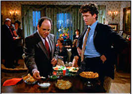

Layer 2 Attacks and How They Work

Switches
How can I defend against them?
When speaking about layer 2 attacks we are talking about the Data Link Layer of the OSI Model where Frames are encapsulated. Since switches operate at layer 2 and work with Frames we will look at mitigating attacks against layer 2 and go over some best practices for securing the layer 2 network. You may have heard of a few of the terms in this post such as VLAN Hopping, or SPT (Spanning Tree Protocol), and DCHP (Dynamic Host Configuration Protocol) and so on. Now all these protocols are up for attack all day long. You cannot stop a determined attack but you can make it harder, or as I like to say, have the network behave in a "nothing to see here, move along" mode.
How does a switch work?
Good question, well let's see.
- First, they learn the MAC address of connected devices
- Incoming frames will either be forwarded if the MAC is known or flooded (sent out all other ports) if not
- Flooding will only occur is the MAC is not known or is a broadcast address
- VLANs (Virtual LANs) can be setup to group ports
- VLANs can be used to communicate to other VLANs
VLAN Hopping, really, what's that?
VLAN hopping allows network traffic passing through a switch from one VLAN to into another VLAN before being sent to the destination device. It's kind of like jumping inside the Frame as it passes and sneaking a ride to the other normally inaccessible VLAN. We can hop in one of two ways, switch spoofing or double tagging.
Switch Spoofing
Let's just mention that switches that communicate together can be setup to use a port and therefore a link between themselves as a trunk link. This means that any traffic passing over the trunk will be comprised of all and any VLANs. This is not good because an attacker could for example persuade a switch to turn on trunking for a particular port, and thereby see the traffic for all VLANs. Anything could be passing up and down that trunk, usernames, passwords, etc.
Did you know that some switches put their ports in auto mode for trunking? Not good! I could send a cleverly crafted DTP (Dynamic Trunking Protocol) Frame that the switch won't be able to resist. When it does, I now have a trunk port and trunking access on that port. Or, what if I connected a rogue switch? That would have the same effect. As soon as I plugged it into the network, connecting it by a crossover cable to another switch with auto mode on, then it will just simply open up a nice trunk for me. So, auto mode is not safe. we should disable trunking on all ports and while we are at it we can also disable DTP.
[code]
Switch(config)# interface range fa0/1-24
Switch(config-if)# switchport mode access
Switch(config-if)# switchport nonegotiate
[/code]
Now if I want to have a port as a trunk port, I have to explicitly configure it.
Double Tagging

In 802.1q trunking, there is a native VLAN. This VLAN does not tag Frames. If I can place a computer on the native VLAN, and if I knew how, I could send a Frame with 2 tags (double dipping, just like George above). In the Frame there would be an inner and an outer tag. The switch won't examine the inner tag. This tag could potentially specify the VLAN I want to hack.
Spanning Tree Protocol
Eliminates loops! ensuring all physical loops are taken down. It does this by electing a root bridge, the head honcho! If I have 2 or more switches connected together, then the one with the lowest bridge priority (customizable integer value between 1-65536) is elected as the root bridge. The default value for all Catalyst switches is 32768. When two switches have the same priority then the switch with the lowest MAC address wins. So by default, the MAC address is the deciding factor. To manually elect a root bridge we can use the following methods from global configuration mode.
- spanning-tree vlan vlan-id root primary
- spanning-tree vlan vlan-id root secondary
- spanning-tree vlan vlan-id priority 24576
The Attack?
If an attacker gains physical access to the network and plugs in a switch, the attacker can configure the switch with a lower priority than the root bridge. This cause the rogue switch to send out BPDUs (Bridge Protocol Data Units) telling everyone "Hey! I'm the new superior bridge" and the other switches will comply. Then the attacker can just open a port on the rogue switch as a SPAN (Switch Port Analyzer) port in order to receive all traffic.
Prevention?
There are at least 2 methods:
Root Guard! Remember that. Root guard on all ports except the root port. The root port or ports, on the root bridge are the ports that connect to other switches. Now that root guard running, instead of believing a superior BPDU as being legitimate, the switch goes into root-inconsistant state. But as soon as superior BPDUs stop coming in, the port returns to the forwarding state.
We will discover that the second method is to turn on BPDU Guard on ports that have been configured with something called portfast. The purpose of portfast is to speed up the process of ports getting to the forwarding state. We typically turn on portfast on links to end user devices so they don't have to wait around for the switch port to go through it's regular transition of STP listening and learning stages.